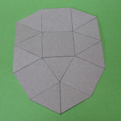

表側
裏側
マスキングテープを
ベタベタ、ベータ、β。
The Kappa Hut β
平面的な甲羅モード。
辞書を引くと
甲羅は英語では
シェルになる。
我々は象形文字を使って
貝殻と甲羅は違うモノだと
認識するわけだけど
連中にとっては
あれもこれも
同じSHELLなんだ。
なるほど。
そして、シェルからシェルターを
勝手に妄想した。
しかし、本当に核シェルターが
要るようになるとは・・・。
無念なり。
貝、海、界
巻貝
スパイラル
捩（ね）じる
捻（ひね）る
ループ、反復
進化、アルゴリズム
増殖
新陳代謝
内と外
隔壁
巻く、渦巻く
幕（まく）、膜（まく）
シート
捲（まく）る
包（パオ）
包（つつ）む、包（くる）む
トランスフォーム！